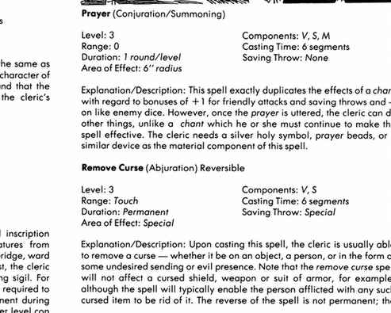
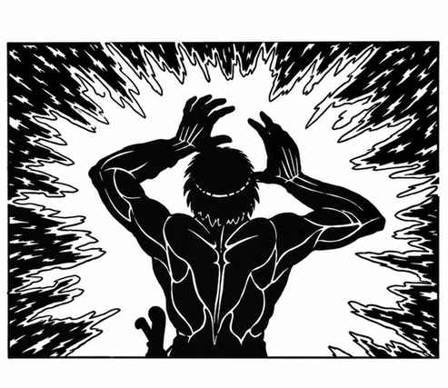
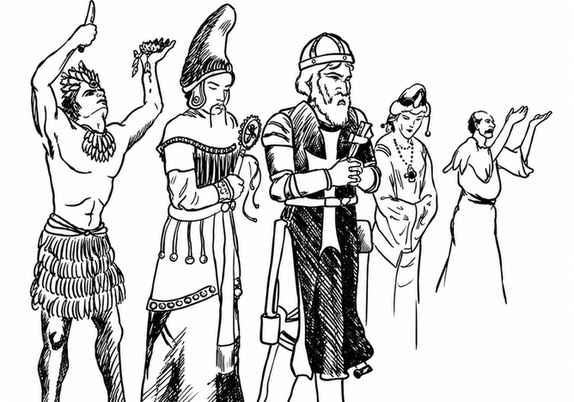

牧师 · Clerics
本页按原书顺序收录牧师法术说明。每项法术依次列出名称与魔法学派、规则数据及效果说明。



牧师法术须知 Notes Regarding Cleric Spells：除宗教徽记、祈祷珠等常规宗教用品外，法术所需的材料成分会在法术完成时消耗。可逆法术的逆转用法可能影响牧师的阵营：邪恶牧师在许多情况下应避免施展有益法术，善良牧师则可能因施展有害法术而承担风险。若持续不加节制地使用与阵营相悖的法术，角色阵营可能改变。牧师必须在准备法术前决定可逆法术采用哪一种形式，不能把同一法术同时准备为正向与逆向。向神祇祈求某项法术并不保证一定获赐；法术环级越高，神祇应允的把握越低。地下城主可以调整材料成分、只要求宗教用品，或取消材料成分，具体由其裁定。
本节内容